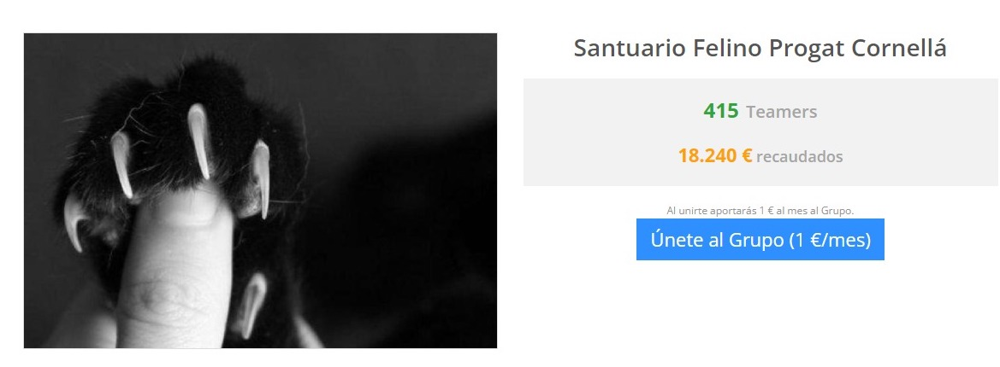

Los socios ayudan a que nuestra asociación siga en marcha y, por lo tanto, podamos seguir con nuestra labor con los felinos.
Tú puedes ayudarnos a que esto sea posible. Si te das de alta como soci@, podrás contribuir al mantenimiento de los gatos que rescatamos de situaciones difíciles y a que podamos seguir atendiendo a todos aquellos que llegan a diario de una manera u otra. La colaboración de los socios es fundamental para nuestra asociación.
Hay diferentes modalidades para ser parte de nuestra familia. Puedes elegir la que más te convenga. La cuota de socio se abona mediante el recibo que cargaremos a la entidad bancaria que nos indiques de forma semestral.
SOCIO
10 € al mes (cobro semestral de 60 €)
SIMPATIZANTE I
4,5 € al mes (cobro semestral de 27 €)
SIMPATIZANTE II
2,5 € al mes (cobro semestral de 15 €)
Hazte Teamer
Teaming es una iniciativa solidaria que nació en el año 1998 para ayudar a los demás mediante microdonaciones de 1 euro. Tod@s l@s que hacemos Teaming donamos 1 euro al mes y lo destinamos a aquella causa social que elegimos. Si quieres ayudarnos a nosotros o a otras asociaciones, solo tienes que registrarte.
La asociación protectora del gato callejero de Cornellà de Llobregat (Barcelona) tiene una meta: concienciar al ser humano y demostrar que la mejor solución es la esterilización del gato y su control para evitar enfermedades y problemas de convivencia.
Necesitamos ayuda para los gatos enfermos y abandonados, así como voluntarios para el control de las colonias de gatos callejeros.

Donación puntual
Sabemos que no todo el mundo puede ayudar de igual manera y, por ello, agradecemos cualquier muestra de apoyo a nuestra labor. Si quieres, puedes traernos latas de comida, sacos de pienso, esas mantas o sábanas que ya no utilizas, medicamentos que ya no necesitas y que no han caducado, etc. Todo puede ser aprovechado para que nuestros animales vivan más cómodamente. También puedes donarnos objetos que estén en buenas condiciones para nuestro mercadillo de segunda mano.
Si lo prefieres, puedes hacernos una aportación económica. Sea el importe que sea, te lo agradeceremos eternamente. Puedes hacernos una transferencia a la siguiente cuenta bancaria de Caixabank (La Caixa):
ES93 2100 0457 9101 0110 4958
Si haces la donación a través de una transferencia desde tu banco, recuerda añadir tu nombre en el concepto del ingreso bancario junto con la palabra «Donativo».
Los donativos económicos no tienen carácter de cuota periódica ni de alta de socio. Es una única aportación libre; puedes donar, siempre que quieras y cuando quieras, cualquier tipo de cantidad económica, por pequeña que sea. Tampoco sirven para desgravar en la declaración de la renta.
Hazte voluntario
Voluntarios alimentadores de colonias, un trabajo que llena de satisfacción pero que no cuenta si es festivo, vacaciones, hace calor o frio, llueve o hace sol. En Cornella hay cerca de 600 gatos que son alimentados a diario. Se necesita constancia y que sea persona observadora ya que muchos casos de gatos ferales enfermos, son los alimentadores los que alertan para poder cogerlo y que pueda dársele la asistencia que necesita
Voluntarios para el hogar de los gatos abandonados. A diario se limpia y alimenta la gatera por la mañana y por la tarde y se les deja una estancia impecable para que vivan dignamente, si tienes unas horas a la semana o en fines de semana ya sea para el sábado o el domingo, ¡serás bienvenido!
Voluntarios para nuestros mercadillos y stands.